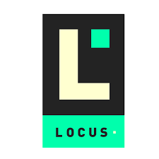

Django + React = ♥?
Um breve overview nas tecnologias e como integrá-las
Quem sou eu?
github.com/davidpierre21
@davidpierrea
Django
O que é Django?
Django é um framework de alto nível, escrito em Python que encoraja o desenvolvimento limpo de aplicações web.
Mas django não é um framework full stack?
React

O que é React?
O React é uma biblioteca para criar interfaces, que foi idealizada pela galera do Facebook e Instagram.
E porque usar React?
Como integrá-las?

Porta número 1:
npx create-react-app my-app
Porta número 2:
npm run eject
Porta número 3:
Configurar o webpack na mão.Boilerplates:
-
Django-React Boilerplate - Vinta
-
Django-React Webpack - Labcodes
-
Django-React Boilerplate - JustDjango
Construir o próprio boilerplate?
Dúvidas?